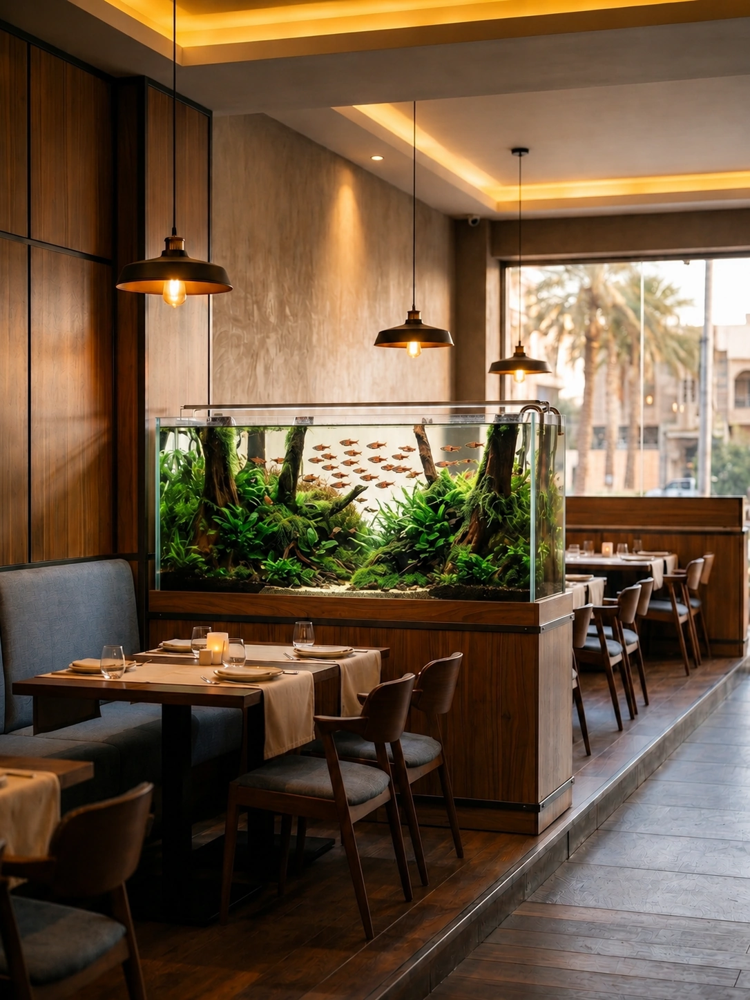

من أول فكرة…
إلى حوض متكامل.
معدات، تصميم، تنفيذ وصيانة — للبيت، للمشروع، وللمحل.

تصور للمكان · مطعم
التصاميم
كل مكان إله حوضه.
كل حوض يتصمم على المكان نفسه: أبعاده، إضاءته، وشلون الناس تتحرك بيه.
بيتيفصل الجلسة عن السفرة بدون ما يسد المكان. تصور للمكان.
عيادةيندمج بالجدار قبال الانتظار، بارتفاع مريح للنظر. تصور للمكان.
فندقيصير قطعة استقبال واضحة من أول ما تدخل. تصور للمكان.
الصور أعلاه تصورات توضيحية للمكان، مو توثيق لمشاريع منفذة. الأسماك والكائنات الظاهرة جزء من التصور البصري فقط، ومو ضمن البيع.
الخدمات
وراه نظام كامل يشتغل.
من التصميم والتركيب، للتشغيل والصيانة.
الخدمة الميدانية حالياً
بغداد · أحواض المياه العذبة
- 01
تصميم وتنفيذ الأحواض
نصمم الحوض على قياس المكان واستخدامه، ونحسب من البداية الشكل، المعدات وطريقة الصيانة.
- 02
تركيب وتشغيل الأحواض
نركب الحوض ومعداته، ونضبط الفلترة والإضاءة والتهوية حتى يبدأ بشكل مضبوط من البداية.
- 03
صيانة واستقرار الحوض
AQUAVO Care
صيانة مدروسة مع فحص، متابعة وتقرير واضح بعد الخدمة.
- 04
خدمة المشاريع
AQUAVO Businessللمشاريع
متابعة دورية للمطاعم والعيادات والفنادق والشركات، مع سجل صيانة وتقارير وأولوية وقت الحاجة.
- 05
تجهيز المحلات بالجملة
للمحلات
نجهز المحلات والتجار بمعدات ومستلزمات الأحواض بكميات جملة، والتجهيز يصير مباشرة ويانه على واتساب.